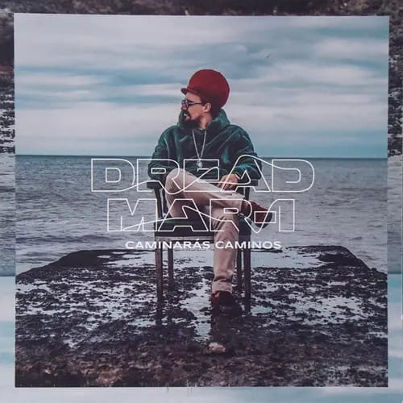

primer album
Comenzó su carrera solista en el 2005 después de varios años como vocalista de Mensajeros.
pero antes de
todo
sacaron un album llamado "luz"Mensajeros luz

En abril de 2005 editó su primer disco, "Jah guía"jah guia. Durante
ese año Dread Mar I
participó como miembro
estable de
Los Cafres, acompañando a la banda de Bonetto en el Estadio Obras y en el Luna Park, donde registraron
su
DVD
"Los Cafres - Luna Park". Dread Mar I participó en coros, y en dos conciertos por la costa argentina
reemplazó
al cantante.

Diciembre despidió el excelente 2006 con el lanzamiento de "Hermanos", un gran disco donde expresa en sus letras y en su armonía el mensaje de paz, unión y respeto que quiere brindar. La explosiva recepción de "Hermanos" escucha aca el album en el 2007, hace que Dread Mar I, junto a su banda, "Los Guerreros del Rey", integrada por Alejandro Ramos en guitarra, Fabián Loredo en bajo, Lucas Colamussi en trompeta, Martín Gariglio en saxo, Walter Aguirre en batería y Matías Zapata en teclado, lleven su música a lugares nuevos. Durante ese año demostró la gran proyección nacional e internacional que tiene como gran artista. Con su voz atrapa a los amantes del reggae y al público en general. Esa consagración se reflejó en tres Niceto sold out y en cada local del Gran Buenos Aires que llenó cuando se presentó.

2008 es sin dudas su mejor año; Dread Mar I es la banda de Reggae argentina que más conciertos realizó hasta el momento con más de sesenta shows en menos de 8 meses, pasando por varias ciudades del interior (con actuaciones en la costa atlántica), Chile y Uruguay. La presentación de su disco "Amor-es" suma potencia a un gran año y abre un horizonte sin límites.


Dread Mar I, el referente indiscutido del nuevo sonido del Reggae Roots y Lover, presenta luego "Viví En Do" su cuarto disco. El mismo contiene 20 tracks y fue grabado y masterizado en Estudios Panda por el ingeniero Emil Cura, entre diciembre de 2009 y Enero de 2010.

El 27 de abril de 2011, la banda llega por primera vez al Estadio Luna Park, circunstancia que aprovecharon para editar su quinto álbum, titulado "Tranquilo", el cual venía incluido al adquirir la entrada para el show. Este álbum contiene 10 canciones, y cuenta con la participación especial de Luciano, uno de los mayores exponentes del reggae jamaiquino.
El 1° de junio de 2012 sale a la venta "Transparente", el sexto disco de Dread Mar I. Contiene 22 canciones, de las cuales "Buscar en Jah" es el primer corte de difusión, cuyo video se conoció tiempo antes de que el álbum llegue a las bateas. Fue presentado en vivo oficialmente el 31 de agosto en el Stadium Luna Park y por entradas agotadas hubo una nueva función el 8 de septiembre. Durante 2013, Dread Mar I recorrió numerosos países de América junto a su banda "Los Guerreros del Rey", donde llegó Diego González en el puesto de bajo.

El 2 de enero de 2014 se estrena "Nada", primer sencillo de un nuevo álbum. La canción cuenta con voces jamaiquinas en el coro. A fines de junio sale el video de "No Te Asustes Ahora", segundo corte promocional. En septiembre se conoce el álbum completo bajo el nombre de "En el Sendero", compuesto por 17 canciones. En octubre obtiene Disco de Oro por ventas y se conoce "Laberintos", tercer corte de difusión.
El 3 de febrero de 2015 estrena el video de "Laberintos". En julio sale el single "¿Qué Hago Yo?". El 12 de septiembre realiza un show multitudinario en El Planetario, en Palermo, Buenos Aires, festejando 10 años de carrera. Los asistentes pagan su entrada con donaciones (alimentos y otras). Allí se registra el concierto para lanzar un CD+DVD en 2016.

El 24 de mayo de 2016 Dread Mar I presenta su nuevo álbum en el Luna Park. "10 Años" está compuesto por 20 canciones y cierra el tracklisting "Hoja En Blanco", tema popularizado por la banda de vallenato colombiana Los Diablitos.

El 31 de diciembre de 2017 lanza el sencillo "En el Seno del Amor", primer adelanto del álbum que editará en 2018. El 24 de mayo de 2018 sale a la venta "Caminarás Caminos", nuevo álbum de Dread Mar I, compuesto por 15 temas.
En agosto de 2019 presenta el nuevo video de la canción "En el Seno del Amor", en versión acústica.

El 27 de enero de 2020, estrena “Morena”, adelanto de lo que será la edición del primer vinilo de su carrera. El 3 de septiembre adelanta su EP con el estreno del video de “Libre”. El 6 de noviembre presenta “Todo lo que se fue”, segundo adelanto de su EP. El 10 de diciembre, colabora con Bizarrap y Nicki Nicole para la canción “Verte”.


En abril del 2021 Dead Mar I presentó "Yo", su nuevo EP conformado por cinco canciones.

El 29 de septiembre de 2022 colabora con Rusherking en su single "Perfecta".

El 9 de junio de 2023 lanza el single "Km 0" junto con su videoclip oficial. El 21 de julio colabora con MYA en "Mya Live P3: Qué pasará".